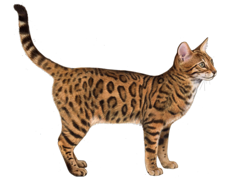

Bengālijas kaķis jeb bengālietis ir reta un unikāla mājas kaķu hibrīdšķirne, kas izveidota 20. gadsimta beigās un radīta mērķtiecīgas selekcijas ceļā
Bengālijas kaķis ir garš, atlētisks un ļoti muskuļots. Runči ievērojami lielāki par kaķenēm. Kaķenes ir ļoti slaidas un elegantas. Pakaļkājas izteikti garākas par priekškājām, līdz ar to kaķa gaita atgādina savvaļas kaķu - leoparda un tīģera gaitu. Galva ķīļveida ar nelielām vai vidēji lielām ausīm. Bengālieša deguns var būt pilnīgi taisns vai ar nelielu kūkumiņu. Acis izteiksmīgi zaļas vai zeltainas. Bengālijas kaķim atšķirībā no citiem kaķiem ir vēl viena īpatnēja iezīme - sabiezināti ūsu spilventiņi.
Bengālijas kaķim piemīt apbrīnojami plastiskas kustības un liela patika rotaļāties ūdenī. Valdošais uzskats par šo kaķu agresīvo raksturu neatbilst patiesībai. Pareizi audzināti bengālieši var būt tādi paši mājas mīluļi kā ikviens mājas kaķis. Tas ir attapīgs, rotaļīgs un draudzīgs.